Assignment 3
A.1
First image set
I took this first set of pictures at sunset, waiting for my GO bus at Square 1:
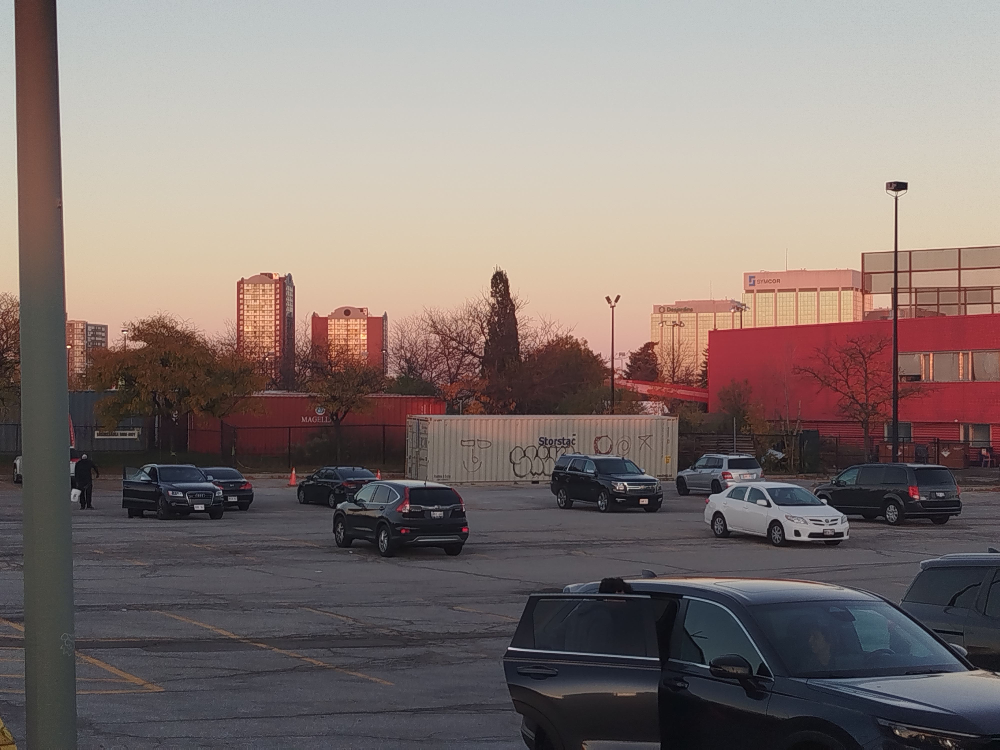
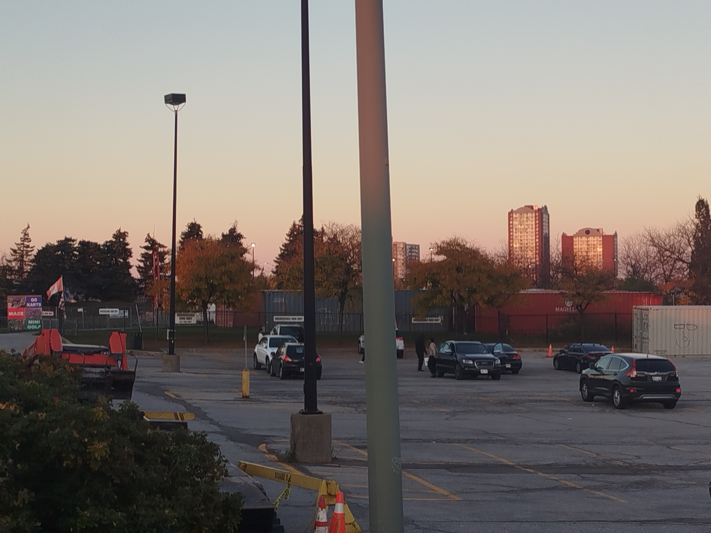
I don't think it's an amazing image set or anything, but it evoke a bit of a nostalgic feeling (even though I only took it a few days ago).
Second image set
The second set of pictures is from the second floor of DC:
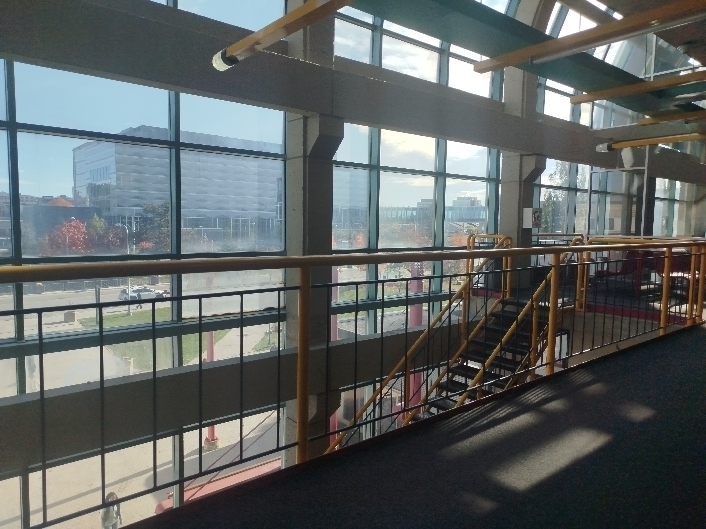
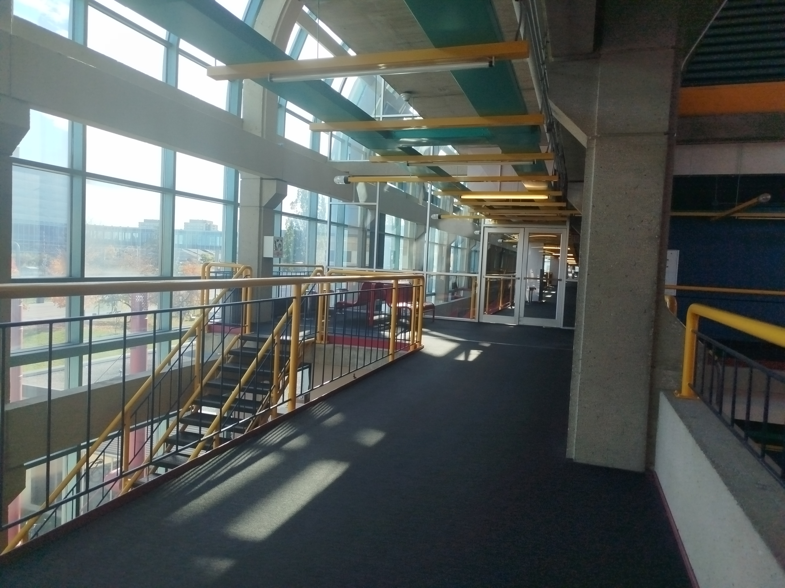
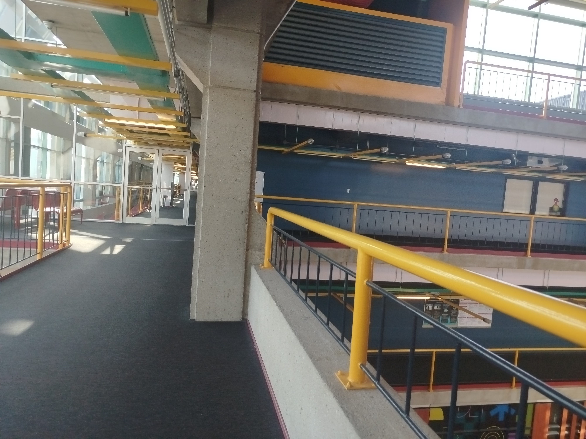
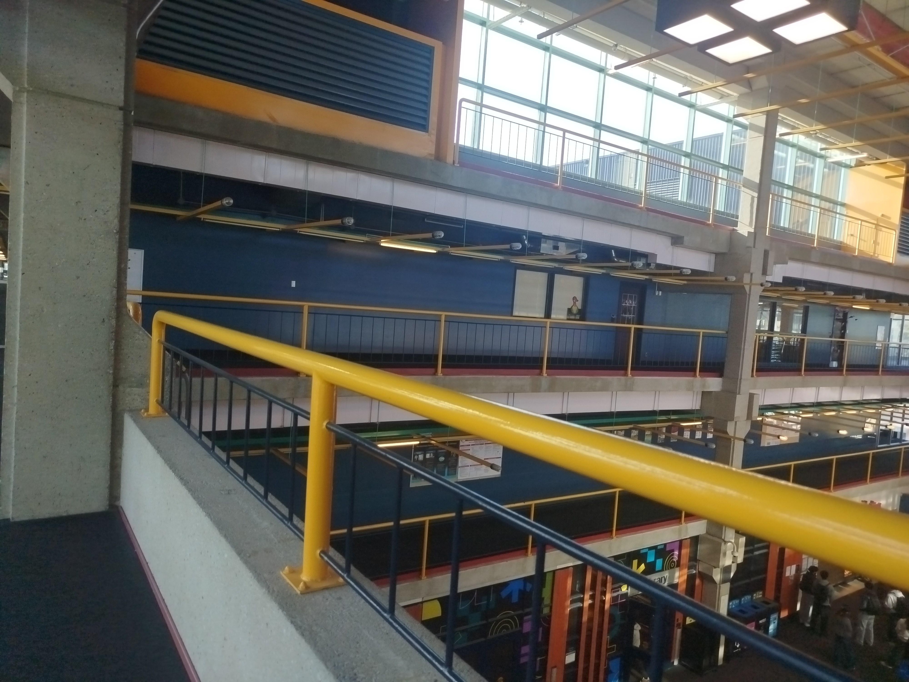
I always thought the design of DC was interesting, but I'm not sure how much of the interesting design I captured in this image set. For the rest of the assignment, I'll be using the first dataset (from Square 1). Also, the images were captured at a resolution of 4000x3000, but I scaled them down to 1000x750 just to speed up the code.
A.2
Correspondences visualized on images:
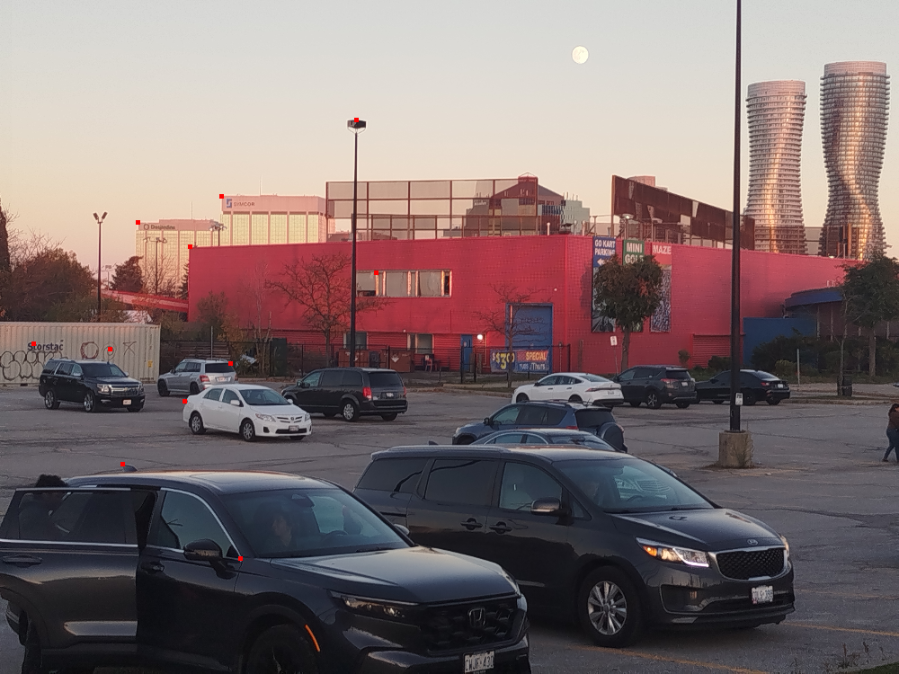
Code for computeH
def computeH(im1_pts,im2_pts):
if len(im1_pts) != len(im2_pts):
raise ValueError("Length of two lists of points must be equal")
n = len(im1_pts)
b = np.concat(im1_pts)
A = np.concat([np.array(
[[im2_pts[i][0], im2_pts[i][1], 1, 0, 0, 0, -im1_pts[i][0] * im2_pts[i][0], -im1_pts[i][0] * im2_pts[i][1]],
[0, 0, 0, im2_pts[i][0], im2_pts[i][1], 1, -im1_pts[i][1] * im2_pts[i][0], -im1_pts[i][1] * im2_pts[i][1]]])
for i in range(n)], axis=0)
h = np.linalg.lstsq(A, b)[0]
H = np.array([[h[0],h[1],h[2]],
[h[3],h[4],h[5]],
[h[6],h[7],1]], dtype=np.float64)
return HNote that the function assumes im1_pts and im2_pts are equal-length lists of tuples (x,y).
This made things a bit confusing for me in part B, since the provided functions return coordinates in the form (y,x).
The values for the matrix A are taken straight from the course slides. Letting represent the coordinates of point i in image 1, and letting coordinates of the same point in image 2, The resulting system of equations is equal to
For each point i. The resulting homography matrix (for transforming the first image to the second image's plane), is
[[ 0.81811 0.00044 505.60479]
[ -0.08035 0.93778 75.05947]
[ -0.00018 -0.00002 1. ]]A.3
Functions
def warpImageNearestNeighbor(im,H):
H_inv = np.linalg.inv(H)
if im.shape[2] != 4:
im = cv2.cvtColor(im, cv2.COLOR_BGR2BGRA)
corners = []
for x,y in [(0,0), (0, im.shape[0]), (im.shape[1], 0), (im.shape[1], im.shape[0])]:
corners.append(H @ np.array((x,y,1)))
left, right, top, bottom = floor(min(c[0]/c[2] for c in corners)), ceil(max(c[0]/c[2] for c in corners)), floor(min(c[1]/c[2] for c in corners)), ceil(max(c[1]/c[2] for c in corners))
warped_image = np.zeros((bottom-top, right-left, 4))
for x in range(left, right):
for y in range(top, bottom):
x_new, y_new, w = H_inv @ np.array((x,y,1))
x_new, y_new = x_new / w, y_new / w
nearest_x, nearest_y = round(x_new), round(y_new)
if 0 <= nearest_x < im.shape[1] and 0 <= nearest_y < im.shape[0]:
warped_image[y-top][x-left] = im[nearest_y][nearest_x]
return warped_image, (left, right, top, bottom)def warpImageBilinear(im,H):
H_inv = np.linalg.inv(H)
if im.shape[2] != 4:
im = cv2.cvtColor(im, cv2.COLOR_BGR2BGRA)
corners = []
for x,y in [(0,0), (0, im.shape[0]), (im.shape[1], 0), (im.shape[1], im.shape[0])]:
corners.append(H @ np.array((x,y,1)))
left, right, top, bottom = floor(min(c[0]/c[2] for c in corners)), ceil(max(c[0]/c[2] for c in corners)), floor(min(c[1]/c[2] for c in corners)), ceil(max(c[1]/c[2] for c in corners))
warped_image = np.zeros((bottom-top, right-left, 4))
for x in range(left, right):
for y in range(top, bottom):
x_new, y_new, w = H_inv @ np.array((x,y,1))
x_new, y_new = x_new / w, y_new / w
valid_pixels = []
weights = []
low_x, low_y = floor(x_new), floor(y_new)
for p_x, p_y in [(low_x, low_y), (low_x+1, low_y), (low_x, low_y+1), (low_x+1, low_y+1)]:
if 0 <= p_x < im.shape[1] and 0 <= p_y < im.shape[0]:
valid_pixels.append(im[p_y][p_x])
weights.append((1 - abs(p_x - x_new)) * (1 - abs(p_y - y_new)))
total_weight = np.sum(weights)
for i in range(len(valid_pixels)):
warped_image[y-top][x-left] += valid_pixels[i] * (weights[i] / total_weight)
return warped_image, (left, right, top, bottom)For both functions, the boundaries are calculated by warping the corners of the (original) picture using the homography matrix, then taking the minimum and maximum of the x and y coordinates over all warped corners.
In terms of actually creating the image, for each coordinate (x,y) within the boundary, we warp it to a new coordinate (x', y') using the inverse of the homography matrix.
- For nearest neighbour, we simply round both coordinates and take the value of the corresponding pixel
in the original image, or leave the pixel fully transparent if the resulting coordinate is entirely outside the original image.
- For bilinear, we take the four surrounding pixels by taking pixels at
(floor(x'), floor(y')), (ceil(x'), floor(y')), (floor(x'), ceil(y')) and (ceil(x'), ceil(y')). We take a weighted average of the 4 pixels (or however many pixels are in the image), with each pixel is weighted according to itself
distance from (x', y'), specifically, each pixel (a,b) weight is (1 - abs(x' - a)) * (1 - abs(y'-b)), the pixel value is then divided by the sum of all pixel weights (though for pixels that aren't at the edge of the original image, the total weight should sum to 1).Nearest Neighbour Warp:
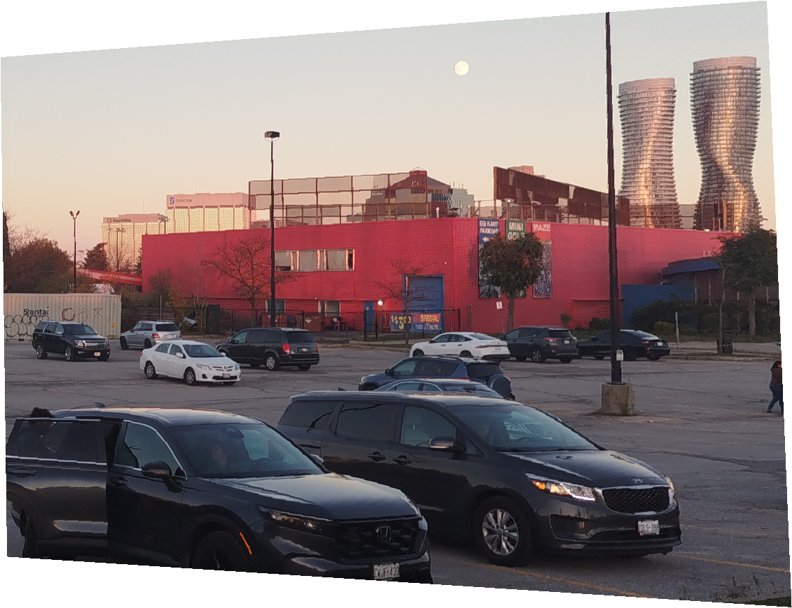
Bilinear Warp:
On Colab, the nearest neighbour warp took 11.1 seconds, and the bilinear warp took 36.3 seconds. However, there was some clear aliasing happening on the nearest neighbour warp (most noticeable on the cars closest to the camera), which was basically completely solved by the bilinear warp.
Rectification
For the first image, I tried rectifying the sign on the side of the red building:
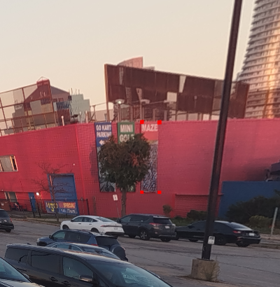
For the second image, I tried rectifying the side of the shipping container:
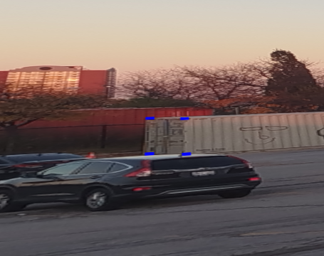
Note that both images are cropped for visibility, since the full rectified image is very large due to the corner of the image being projected very far away.
A.4
I'm creating my mosaic by warping the first and third images onto the plane of the second image, using my bilinear warp function.
I used weighted averaging to blend the images: For each image, I gave each pixel in the original image a weight (stored in the alpha channel) based on the pixel's distance from the edge of the image before warping.
Specifically, for an image of size (W,H), the weight of a pixel (x,y) is equal to the minimum of 1 - |W/2 - x|/(W/2) and 1 - |H/2 - y|/(H/2).
Note that the alpha channel isn't used for its "intended" purpose here: it just serves to store the weights of the pixels in the constituent images. In the final mosaic, each pixel is assigned as the weighted sum of all the pixels
from the constituent images, and then the value for each colour channel is divided by the sum of the weights of all those constituent pixels. The final mosaic should only have pixels with alpha values of 255 or 0 (for parts of the mosaic that aren't covered by any of the images).
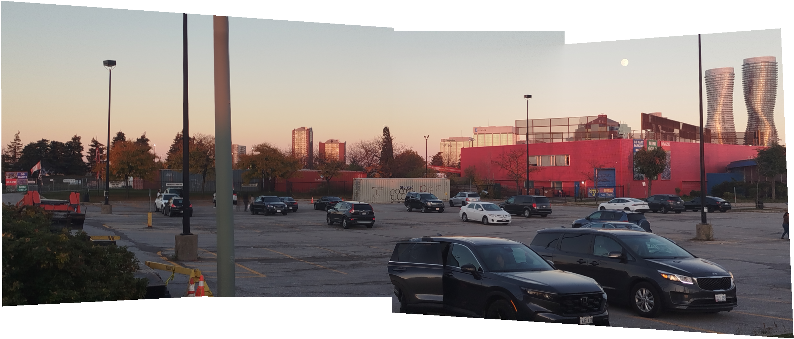
B.1
For Harris sampling, I just used the provided function. For the image, i took the 500 strongest points (otherwise there were way too many points):
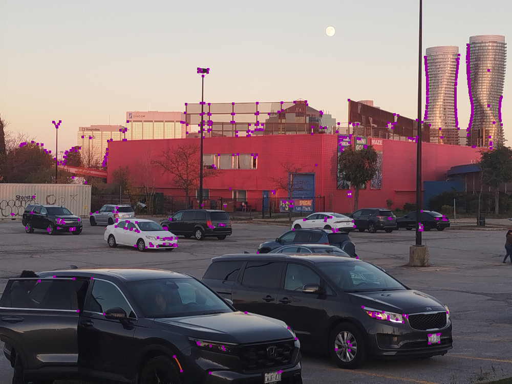
For ANMS, I made a function which accepted a desired number of points to return count, and a parameter c_robust as described in the paper.
I decided to only take the strongest count * 10 points from the Harris detection, since otherwise I found that my algorithm would end up finding very faint points in the sky,
where I personally couldn't see any evidence of anything resembling a corner.
For each point, I calculated its radius as follows:
- Initialize the radius to infinity and set a cutoff score at the current point's score, divided by
c_robust.- Then, since the list produced by
get_harris_corners is sorted by strength in descending order,
we do binary search on the portion of the list to the left of the current point to find the cutoff point above which all points have a corner strength greater than our cutoff.- We calculate the radius of the current point as the minimum distance from our point to any of the points whose corner strength is above the cutoff.
- Once we've calculated the radius for all
count * 10 points, we return the count points with the largest radii.Here's the result:
B.2
To exctract the feature descriptions for each point, I took a 40x40 square of pixels centered on the point, applied a Gaussian blur (5x5, std=1) to simulate taking samples from an image on a higher level of the pyramid, and then took every 5th row/column, starting from the 3rd row and 3rd column (counting from 1) to get the 8x8 feature descriptor, which I then normalized.
Here are two examples of the generated features, and the corresponding parts of the original image:
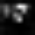
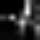
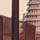
B.3
I did matching as follows:
- For each point in the first image, we compare its feature descriptor to each point in the second image.
The error between the two is calculated as the sum of the squared difference between the values at each pixel in the 8x8 feature descriptor.
- Once we have compared the point in the first image to all points in the second image, we take the ratio between the error for the best match and the error for the second best match as our score.
- If that ratio is below a certain threshold (which, in practice, I set at 0.3), then that match is added to the list of valid matches.
I drew a line between the matched points on both images. I only drew 30 of them, though, since if I drew lines between every match it would be hard to parse the images.
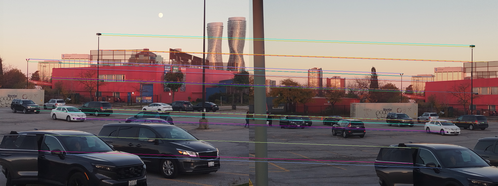
B.4
I implemented RANSAC as described in the lectures. For a certain number of iterations (I chose 500):
- We randomly sample 4 matched points from our previous matching step.
- We then compute the homography matrix between the chosen points using
computeH from part A- Then, for all matches between the two images, we check if the transformed point from the second image is within a certain distance of
the corresponding point on the first image (in practice, I chose a distance of 4 pixels), and if so, assign it as an inlier.
- After we have finished all the iterations, we choose the largest list of inliers out of all the iterations, then recompute our homography matrix
H using the whole list of inliers.
Here is the final mosaic:
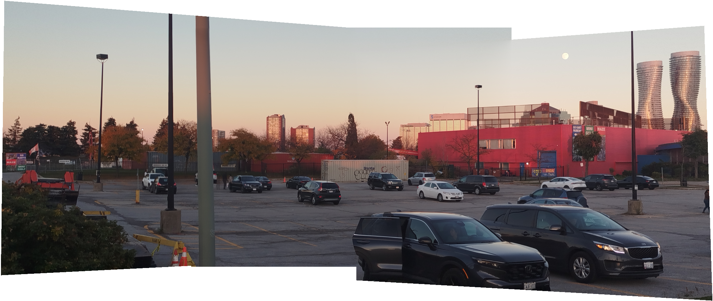
For comparison, here is the mosaic from part A, using the manually labeled matching points:
It's hard to find any differences between the two, other than a slightly different top edge of the mosaic (the top right corner of the leftmost image is visible on the manually labeled mosaic, but not the automatic one). I can't point to any outright issues in either mosaic, other than some ghostly people/car doors caused by people moving during the time between images.